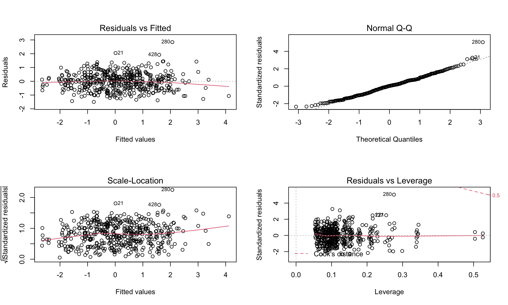

Regression-Model 2
Description
Searching for more potential predictors and finding the association between innocent death and other factors, we decide to concern about the variables (Gun ownership rates, crime rate, unemployment rate in each state) and just concentrate on 2020 but in order to avoid the collinearity, we drop the highly potential correlated variable (State).
- In this model, predictors and variables are below:
- innocent death(per 100K): count of innocent death divided by state population and multiplied by 100K
- age_bin: age divided into 6 groups(0-14, 15-24, 25-34, 35-54, 55-85, 85+)
- gender: Male, Female
- race: usually based on visual evidence or official reports(European-American/White, African-American/Black, Native American/Alaskan, Asian/Pacific Islander, Hispanic/Latino)
- Gun ownership rate: rate of the act of owning a gun, either legal or illegal
- Crime Rate per 100K: be calculated by dividing the total number of reported crimes of any kind by the total population and multiplied by 100K
- Unemployment rate: measures unemployment within the civilian non-institutional population aged 16 years and olde
Explorative Graphs
The following graphs show the trend of three variables including crime rate, gun ownership, and unemployment rate. The crime rate varies from state to state, with Alaska showing the highest rate. Gun ownership rates vary by state and Montana has the highest. Unemployment rate in each state shows a diversified trend and Nevada has the highest one.
To test the collinearity, we also divide the values based on their original magnitudes. The results demonstrate that there is no apparent interactions among these three variables.
# Join data
pop_gun_crime_unemply <-
gun_owner %>%
left_join(crime_stat, by = "state") %>%
left_join(unempolyment_stat, by = "state") %>%
mutate(state = state.abb[match(state, state.name)]) %>%
select(state, everything())
pop_gun_crime_unemply %>%
mutate(
crime_rate = crime_per_10e6 / 10e3,
gun_rate = gun_ownership / 6) %>%
select(-(2:3)) %>%
pivot_longer(
2:4,
names_to = "statistics",
values_to = "values"
) %>%
mutate(
statistics = case_when(
statistics == "crime_rate" ~ "Crime Rate Per 1k",
statistics == "gun_rate" ~ "Gun Ownership Rate/6",
statistics == "unemploy_rate" ~ "Unemployment Rate",
)
) %>%
ggplot(aes(x = state, y = values, color = statistics, group = statistics)) +
geom_point(aes(size = values), alpha = .4, show.legend = FALSE) +
geom_smooth(se = FALSE) +
facet_grid(. ~ statistics) +
theme(
axis.text.x = element_text(size = 6, angle = 90, vjust = 0.5, hjust = 1),
legend.position = "none") +
labs(
x = "State",
y = "Value"
)
Statistical Analysis
1.Modeling
Because the distribution of innocent death per 100K is the same in model 1, here we still conduct log transformation and the formula is followed below:
\[ log(innocent \space death \space per \space 100k) = \beta_0 + \beta_1 age + \beta_2 gender + \beta_3 race + \beta_4Gun \space ownership \space rate\] \[ + \beta_5Crime \space rate + \beta_6 Unemployment \space rate\]
# Fit a model
fit2 <- lm(log(innocent_kill_per100k) ~ age_bin + gender + race + gun_ownership + crime_per_10e6 + unemploy_rate,
data = reg_df2)
summary(fit2) %>%
broom::tidy() %>%
knitr::kable() %>%
kable_styling() %>%
scroll_box(height = "200px")| term | estimate | std.error | statistic | p.value |
|---|---|---|---|---|
| (Intercept) | -1.8916037 | 0.4058711 | -4.6606017 | 0.0000041 |
| age_bin15-24 | 1.3786319 | 0.2404796 | 5.7328439 | 0.0000000 |
| age_bin25-34 | 1.7053292 | 0.2392325 | 7.1283349 | 0.0000000 |
| age_bin35-54 | 1.3006614 | 0.2394451 | 5.4319813 | 0.0000001 |
| age_bin55-84 | 0.5309971 | 0.2496321 | 2.1271188 | 0.0339337 |
| age_bin85+ | 2.6462839 | 0.4043469 | 6.5445889 | 0.0000000 |
| genderMale | 0.9949492 | 0.0861592 | 11.5477968 | 0.0000000 |
| raceAsian/Pacific Islander | -0.6056649 | 0.2006758 | -3.0181265 | 0.0026825 |
| raceEuropean-American/White | -1.4351088 | 0.0888841 | -16.1458370 | 0.0000000 |
| raceHispanic/Latino | -0.8322968 | 0.1136547 | -7.3230310 | 0.0000000 |
| raceNative American/Alaskan | 0.8784691 | 0.2162339 | 4.0625873 | 0.0000569 |
| gun_ownership | 3.1025410 | 0.4551975 | 6.8158127 | 0.0000000 |
| crime_per_10e6 | -0.0001550 | 0.0003117 | -0.4971922 | 0.6192875 |
| unemploy_rate | -6.5967308 | 2.9232804 | -2.2566192 | 0.0244934 |
summary(fit2) %>%
broom::glance() %>%
knitr::kable() %>%
kable_styling() %>%
scroll_box(height = "120px")| r.squared | adj.r.squared | sigma | statistic | p.value | df | df.residual | nobs |
|---|---|---|---|---|---|---|---|
| 0.6312087 | 0.6209425 | 0.811512 | 61.48452 | 0 | 13 | 467 | 481 |
According to the statistics in the table above, we could conclude that P-value is \(2.2 \times 10^{-16}\) and smaller than significant level which means the association is significant in statistical aspect although crime rate seems have no significant association.
When concentrating on the table of R.squared, we could figure out that adjusted \(R^2\) value is 0.62 which means that 62% of the variability in the outcome data can be explained by the model so that this value is generally considered a Moderate effect size and the fit is not as good as model1. If R-squared value 0.5 < r < 0.7 this value is generally considered a Moderate effect size (Ref:Moore, D. S., Notz, W. I, & Flinger, M. A. (2013). The basic practice of statistics (6th ed.))
2.MLR dignostics
The four graphs is used for proving the homoscedasticity of residual. When looking deep into those graphs, we’re able to conclude that all assumption is satisfied but it’s not as good as model 1.
- Residuals vs Fitted: show that it has linear relationship due to the nearly equal distribution.
- Q-Q plot: illustrate residual is normality
- Scale-Location: The assumption of homoscedasticity has been checked.
- Residuals vs Leverage: shows that there’s no too many outlier points and influential points in the plot.
# Model diagnosis
par(mfrow = c(2, 2))
plot(fit2)